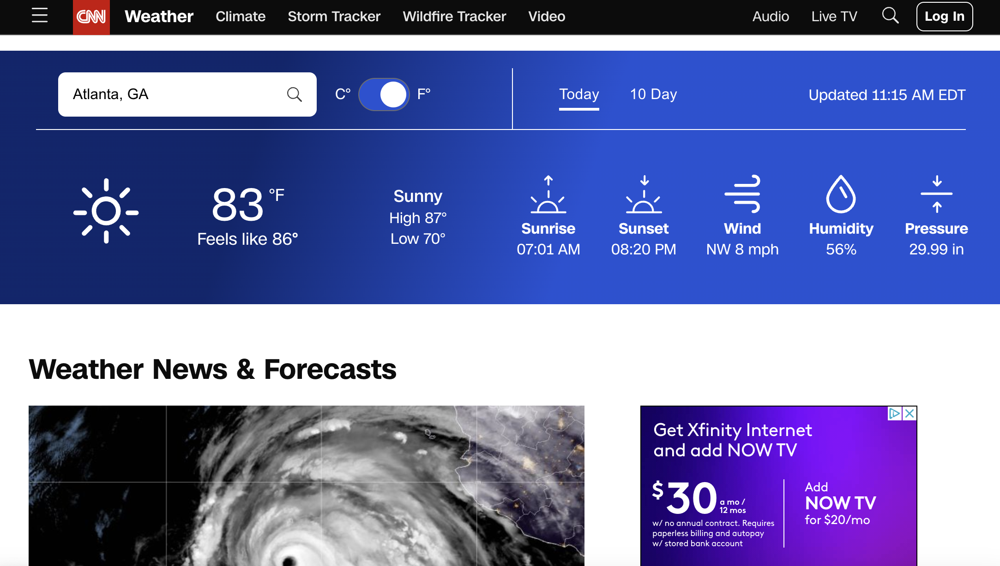
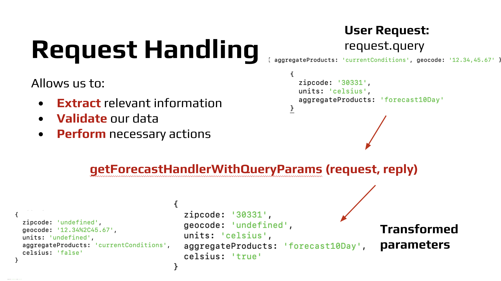
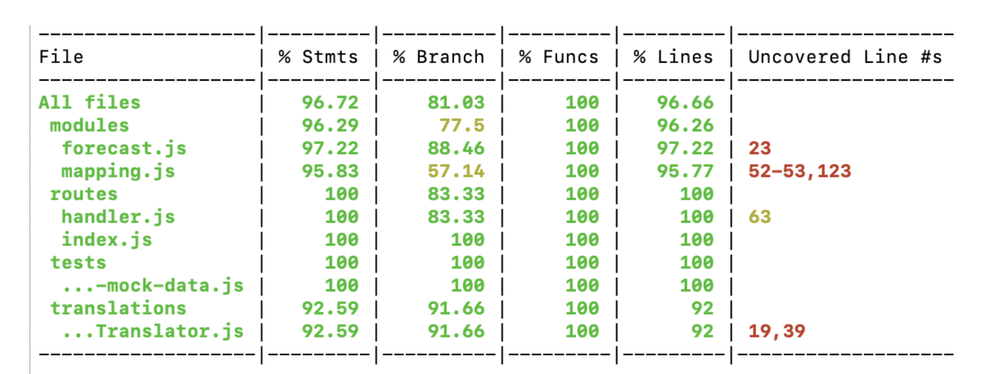

I completed this project as part of my Summer 2023 Software Engineering Internship with Warner Bros. Discovery.
The CNN Weather API powers this widget by sending data for the widget to display. All Weather API requests proxies through CNN DATA API to the third-party IBM The Weather Company (TWC) API.Currently, the legacy Weather API offers forecasts for the current conditions as well as 5 and 10 day forecasts.
However, there were multiple shortcomings with the legacy API: outdated Node version and Node packages; multiple unnecessary dependencies; redundant TWC calls that lead to increased costs and decreased performance; outdated coding practices and a codebase that is difficult to read and unorganized; and concerns with security, scalability, and performance
Thus, arose our two main goals of this project:
1) Maintain feature parity with the legacy weather proxy service.
2) Improve scalability, reliability, performance, and security while following industry best-practices.
For this project, I worked on a team of three people: a senior engineer at CNN who would guide the project, another summer intern, and myself.
The solution to this problem involves the following:
Node.js and Express.js
The previous service used HAPI, but we decided to switch to Express.js for routing and request handling since express is more updated, documented, and popular.
Maintain existing /GET functionality
We will carry over much of the old logic and mapping, however, we will improve the code where we see fit.
Improved grouping for geocodes within the same area
Goal is to reduce calls to The Weather Company (TWC), therefore reducing costs and improving performance. This enhancement was conducted through a separate spike effort that will be discussed later.
Terraform for IAC
Using Terraform for infrastructure-as-code will help us easily manage and provision the resources required to run the API.
AWS for infrastructure
Involves services such as Amazon ElastiCache, API Gateway, Elastic Load Balancer, Fargate, and Identity and Access Management.
CloudWatch and DataDog
Monitoring will be conducted using Amazon CloudWatch and Datadog.
After fleshing out our solution, I worked on developing an architecture diagram for the service, which can not be shown here due to security reasons.
I received feedback from other senior engineers and reiterated on our proposal multiple times. Finally, I gave a presentation to a larger team of experienced software engineers at CNN to get approval to continue with the presented plan. This presentation was a success and we were allowed to continue moving forward with the project.
The next big phase of our project was ticketing. Like the other teams at CNN, we used Jira to organize our project.
We first wrote the epic for our project, where we laid out the general overview of our project, as well as the project's acceptance criteria. Then we wrote an additional 20 tickets covering the various tasks that we must complete for the project. Each ticket is filled in with details including: user story, overview, acceptance criteria, and resources.
We also participated in 2 ticket grooming sessions alongside our daily team standups.
The first step we took in the project's implementation is implementing routing using Express.js. The previous service used HAPI, but we wanted to switch to a more modern, updated framework. It is good practice to separate out the code into different files and functions based on what each part of the code does, however the legacy API put all their routing, handling, and mapping in the same file. During this process, we aimed to write clean and modular code and made adjustments to the previous app organization where seen fit. For example, the legacy index.js file had 418 lines, while our new application's index.js file only has 29 files due to our modularization of the code.
Next, we worked on request handling. One major step in request handling is ensuring that the request parameters are valid. The previous API had very weak validation steps that only checked whether there was an input or not. To improve the API, I added enhanced validation using Joi, which checked parameters such as geocode and zipcode using specific REGEX, ensuring that the query parameters are valid. Furthermore, the legacy API always returned a 200 response even if the query parameters were invalid. However, the new API now returns the correct HTTP response for various requests.
The next step of the project was mapping. Like mentioned earlier, our API is a proxy service, so it is actually getting its data from a third party IBM TWC (The Weather Company) API. However, we can't just use the raw JSON response of TWC, we had to remap the data so it better suits our application's needs. Here too, we modularized the code of the legacy API, breaking down large functions and files. We also added more detailed documentation to make the code easier to read.
Once we got our API working, we moved on to testing the API. Unit testing was done using Jest, while we used Postman for general API testing. Testing allowed us to ensure reliability and stability of our application and identify any issues so that we can deliver a dependable solution.
We tested whether expected responses are returned from each endpoint (getForecast, memorycheck, healthcheck), whether the parameter handler behaves as expected, whether correct errors and status codes are retuend when needed, and whether the expected responses are returned for various reqeust parameters (such as geocode, zipcode, and undefined values).
Our goal was to achieve 50% test coverage. However, after writing thorough unit tests, we found that our test suite reached 96.72%.
There were multiple bugs that we discovered, both as a result of these unit tests as well as general examination of API behavior. For example, we found that for requests where the geocode is invalid, the API was sending an error message, but a successful HTTP status code. I examined the code and realized that this was due to the difference between the string 'undefined' and the value undefined in JavaScript, so I was able to rewrite the API logic to consider 'undefined' as a query parameter that should return an error.
We also ensured that the API was thoroughly documented. We created a README.md file for the project, which detailed project dependencies, how to set up the project, how to run tests, how to set environment variables, and how to contribute to the project.
Another major stage of my internship project was investigating the geocoding spike. We wanted to reduce the number of API requests made to TWC to improve the API's scalability and reduce the cost of running this API.
To solve this, we decided to implement a geocode-grouping method which cannot be explained in detail for security reasons.
I implemented this solution it a separate function that gets called in the request handler function. Analysis shows that this enhancement will lead to a reduction in TWC API calls by about ~30%.
One major outcome of my project is improved architechture. One ways this new architecture model improves the old one is increased scalability thanks to the auto-scaling of AWS Fargate and the traffic distribution of Elastic Load Balancing. The new API service is also very reliable thanks to the application being hosted on multiple availability zones. Furthermore, everything is centralized on AWS, making resources easy to manage.
Another improvement that resulted from the project is more purposeful code. We modularized the codebase. Like mentioned earlier, the files before were very long and unfocused. Now, each function and file has it's own purpose. We also eliminated unused code that didn't need to get carried over. For example, there were multiple irrelevant services and routes that were once used, but were no longer relevant that never got removed. Finally, we improved style and documentation. We installed ESLint and standardized each file's style. We also added more descriptive comments and a new README for the project.
Finally, our project increased the modernity of the weather API. We updated the node version from 10 to 18, as well as relevant packages. We also made sure to adhere to best-practices for building RESTful APIs such as sending the correct HTTP status codes, using JSON for sending and receiving data, updating from an old version of HAPI to Express.js, and writing detailed documentation.
During this internship, I learned how important it was to keep track of my achievements. I kept a log of what I worked on every day in One Note. Not only did this help me share my progress with my team during stand-ups and 1:1s with my mentor, it will also help me personally when I look back to see what I have accomplished and where I can improve upon. Though it is a very common piece of advice, I also found it very important to build connections. Not only was it beneficial to build connections within the team, but also across people of different disciplines and in different offices. It makes the day-to-day more enjoyable when you work with people you know well and also will help me stay connected in the future.